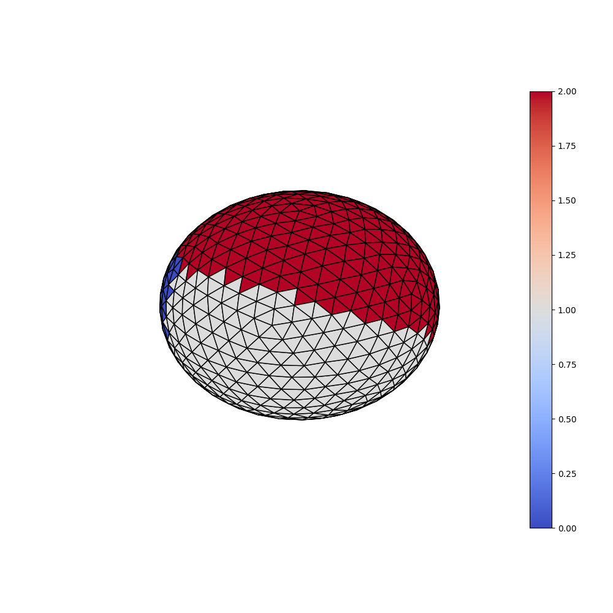
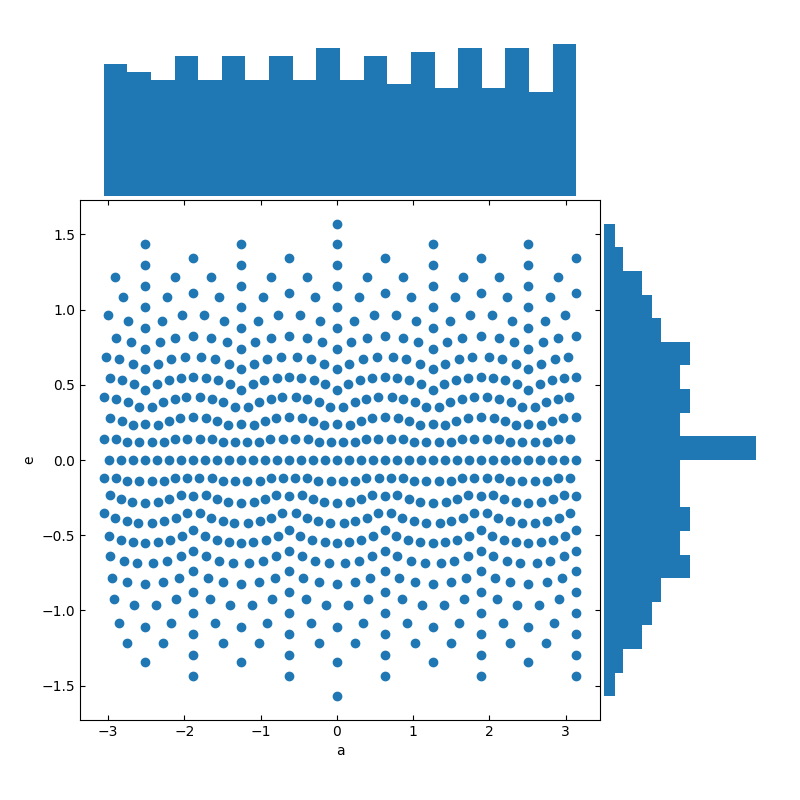
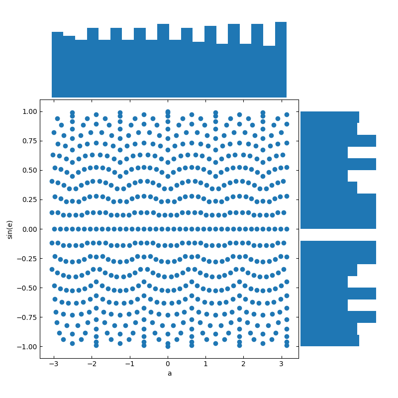

PyTorch toolbox to work with spherical surfaces.
Note
Go to the end to download the full example code.
Project texture¶
Credit: A Grigis
Convert a texture onto a spherical surface into an image by evenly resampling the spherical surface with respect to sin(e) and a, where e and a are elevation and azimuth, respectively, and vice versa.
import torch
import numpy as np
from surfify import utils
from surfify import datasets
from surfify import plotting
import surfify.nn.functional as F
import matplotlib.pyplot as plt
Load data¶
First we load the classification dataset (with 3 classes).
ico_order = 3
n_classes = 3
standard_ico = False
ico_vertices, ico_triangles = utils.icosahedron(
order=ico_order, standard_ico=standard_ico)
n_vertices = len(ico_vertices)
_, labels = datasets.make_classification(
ico_vertices, n_samples=40, n_classes=n_classes, scale=1, seed=42)
print("Surface:", ico_vertices.shape, ico_triangles.shape)
print("Labels:", labels.shape)
Surface: (642, 3) (1280, 3)
Labels: (642,)
3-D surface to 2-D grid projection¶
proj_texture = utils.text2grid(ico_vertices, labels)
print("Proj texture:", proj_texture.shape)
plt.figure()
plt.imshow(proj_texture.T, origin="lower")
plt.axis("off")
plt.title("Nearest")
Proj texture: (192, 192)
Text(0.5, 1.0, 'Nearest')
2-D grid to 3-D surface projection¶
texture = utils.grid2text(ico_vertices, proj_texture)
print("Texture:", texture.shape)
plotting.plot_trisurf(ico_vertices, ico_triangles, labels, is_label=True)
plotting.plot_trisurf(ico_vertices, ico_triangles, texture, is_label=True)
- 
Texture: (642,)
Uniformly distributed locations¶
Using the sin of the elevation enables us to have resampled locations almost uniformly distributed.
def scatter_density(x, y, labelx, labely):
""" Display scatter plot with x- and y- densities.
"""
left, width = 0.1, 0.65
bottom, height = 0.1, 0.65
spacing = 0.005
rect_scatter = [left, bottom, width, height]
rect_histx = [left, bottom + height + spacing, width, 0.2]
rect_histy = [left + width + spacing, bottom, 0.2, height]
plt.figure(figsize=(8, 8))
ax_scatter = plt.axes(rect_scatter)
ax_scatter.tick_params(direction="in", top=True, right=True)
ax_scatter.set_xlabel(labelx)
ax_scatter.set_ylabel(labely)
ax_histx = plt.axes(rect_histx)
ax_histx.axis("off")
ax_histy = plt.axes(rect_histy)
ax_histy.axis("off")
ax_scatter.scatter(x, y)
bins = 20
ax_histx.hist(x, bins=bins)
ax_histy.hist(y, bins=bins, orientation="horizontal")
ax_histx.set_xlim(ax_scatter.get_xlim())
ax_histy.set_ylim(ax_scatter.get_ylim())
azimuth, elevation, radius = utils.cart2sph(*ico_vertices.T)
sin_elevation = np.sin(elevation)
scatter_density(azimuth, elevation, labelx="a", labely="e")
scatter_density(azimuth, sin_elevation, labelx="a", labely="sin(e)")
- 
- 
Integration in deep neural network¶
Since a spherical patterns are circularly continuous with respect to the azimuth, we need to apply circular padding to the boundaries of azimuth for the flattened 2-D map but applied zero padding to the boundaries of evaluation.
proj_texture = np.expand_dims(proj_texture, axis=(0, 1)).astype(np.float32)
proj_texture = torch.from_numpy(proj_texture)
print("Proj texture:", proj_texture.shape)
pad_texture = F.circular_pad(proj_texture, pad=(1, 1))
print("Padd texture:", pad_texture.shape)
conv = torch.nn.Conv2d(
in_channels=1, out_channels=3, kernel_size=3, stride=1, padding=0)
conv_texture = conv(pad_texture)
print("Conv texture:", conv_texture.shape)
plt.show()
Proj texture: torch.Size([1, 1, 192, 192])
Padd texture: torch.Size([1, 1, 194, 194])
Conv texture: torch.Size([1, 3, 192, 192])
Total running time of the script: (0 minutes 1.867 seconds)
Estimated memory usage: 89 MB
Follow us